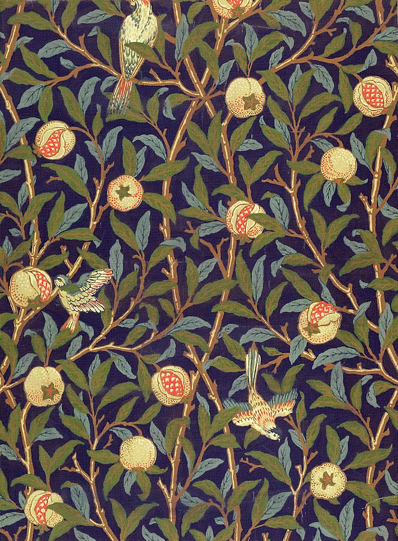

¿Qué es?
El movimiento Arts & Crafts es una corriente que duro entre 1860 y 1914. Fue un movimiento de diseño y filosofía que se caracterizaba por el rechazo hacia la industrialización y las clases sociales desiguales. A su vez que proponía el trabajo en equipo y la vida sencilla.
Contexto Histórico
El Movimiento Arts & Crafts surgió en la década de 1860 en Gran Bretaña, a finales de época victoriana, durante el periodo de la revolución industrial donde cada vez se producían más productos en masa y a su vez las clases sociales estaban cada vez más distanciadas unas de otras. Debido a esta creciente industrialización William Morris propuso los ideales de este movimiento que rápidamente se extendieron por Europa y estados Unidos volviéndose así el movimiento con mayor alcance en la era moderna.
Objetivos
 El principal objetivo del movimiento era reformar el diseño y la sociedad mediante el retorno a la artesanía, en respuesta a los primeros objetos industriales, los cales eran bastante brutos, descuidados y desagradables estéticamente.
El principal objetivo del movimiento era reformar el diseño y la sociedad mediante el retorno a la artesanía, en respuesta a los primeros objetos industriales, los cales eran bastante brutos, descuidados y desagradables estéticamente.
Características
Representantes
William Morris:

William Morris nació en walthamstow, Reino Unido en 1834, en una familia privilegiada. Cuando Morris ingresó a la universidad conoció a Edward Burne-Jones quien se convirtió en un muy buen amigo suyo, conoció a su futura esposa Jane Burden con quien contrajo matrimonio en 1859 y en 1860 se mudaron a la Red House.
En 1861 crearon la Morris, Marshall, Faulkner & Co. Donde creaban murales y tapices bordados. En la década de 1860 Morris empezó a diseñar sus primeros papeles tapices. En 1875 Morris se volvió el único propietario de la compañía y abrió una tienda en Oxford Street un par de años después, con la cual creó un buen capital que invirtió en la compra de una fábrica textil en el sur de Londres.
Acercándose al final de su carrera Morris creó la Kelmscott Press y empezó a dedicarse cada vez más a la escritura. William Morris Falleció el 3 de octubre de 1896 en Londres, Reino Unido.
Edward Burne Jones:
Nació en Birmingham, Reino Unido el 28 de agosto de 1833, Fue un artista y diseñador inglés asociado principalmente con la hermandad prerrafaelita. Sin embargo, también jugó un papel importante en la creación del movimiento Arts & Crafts acompañando a Morris en su empresa y otros trabajos. Falleció el 17 de junio de 1898 en Londres Reino Unido.
Philip Webb
Nació el 12 de enero de 1831 en Oxford Reino Unido, fue un diseñador y arquitecto británico, fue uno de los mayores exponentes del movimiento Arts & Crafts, falleció el 17 de abril de 1915.
Eric Gill
Nació el 22 de febrero de 1882 en Sussex, Reino Unido. Fue un tipógrafo, diseñador gráfico, ilustrador y escultor inglés. Estudio en la escuela central de Arte y Diseño que creció con el movimiento Arts & Crafts. Se destacó por la creación de la familia tipográfica Gill Sans y Perpetua. Murió el 17 de noviembre de 1940 en Middlesex, Reino Unido.
Edward R. Taylor
Nació el 14 de junio de 1838 Reino Unido, fue un artista y educador inglés. Pintó tanto en acuarela como en óleo. Se convirtió uno de los personajes influyentes dentro del movimiento por ser uno de los principales representantes en el Birmingham Municipal School of art. Murió el 11 de enero de 1911.
Galería
